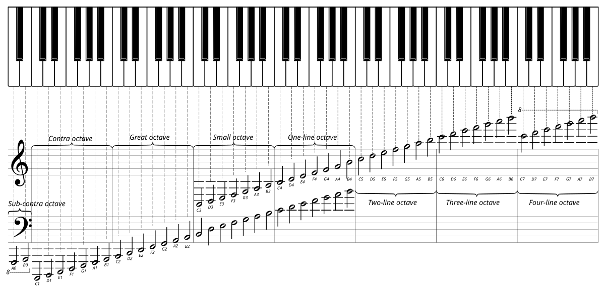
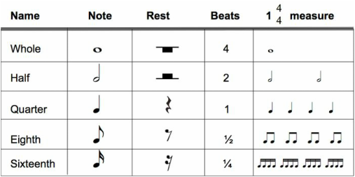

Music Theory Introduction 音乐理论入门
Music
CN-blogs
Zen mode updating 佛系更新中
c'之类的为 ABC notation.
1 Change of Mind
- 音乐中没有绝对, 下文所有句子前面都默认加上「一般情况下」.
2 Basic Terms 基础术语
- Note 音符:
Pitch 音高
Figure 1: Pitch on piano 时值

音符的时值
- Clef 谱号:
- Treble clef 高音谱号 𝄞
- Bass clef 低音谱号 𝄢
- Alto clef 中音谱号 𝄡
3 Harmony 和弦
4 Four-part harmony 四部和声
和声写作指的是四部和声写作.
4.1 声部特征
- Soprano 高音部 / 女高音:
- 旋律性, 平稳 (2-3 度, 一般不大跳)
- 上限: C6 (
c', High C, 参考 Figure 1)
- Alto 中音部 / 女中音:
- 中间声部, 平稳
- 上限: B4 (
B), C5 (c) 可以偶尔使用.
- Tenore 次中音部 / 男高音:
- 中间声部, 可以大跳
- 上下限: [D3, F4] ([
D,F]), G4 (G) 可以偶尔使用.
- Basso 低音部 / 男低音:
- 下限: C2 (
C,,)
- 下限: C2 (